Art has been part of my life for as long as I can remember.
Drawing, painting, and making things by hand give me a little escape from the everyday. My sketchbook is where I slow down, play, and experiment with pencil, watercolor, and oils. I find the process both therapeutic and joyful. This is a small, growing collection of those explorations.
I’m sharing some of my own sketches and quick art, alongside paintings I saw on a recent museum visit. I’m always fascinated by the different techniques painters use, especially the layers and brushwork you notice when you look closely. I’d love to develop my skills enough to emulate them. More of my own work is on the way.
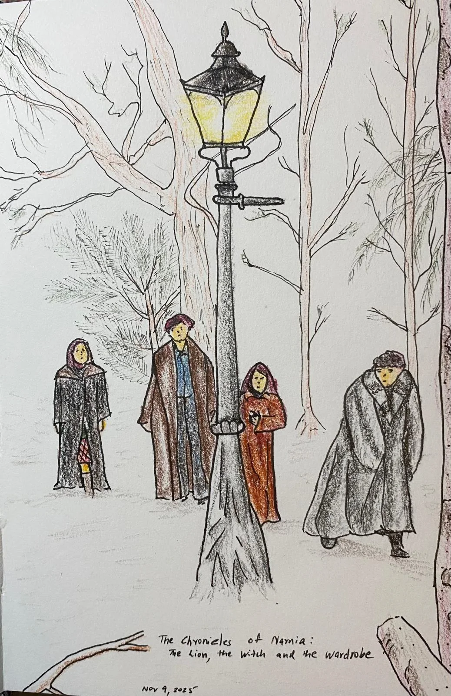
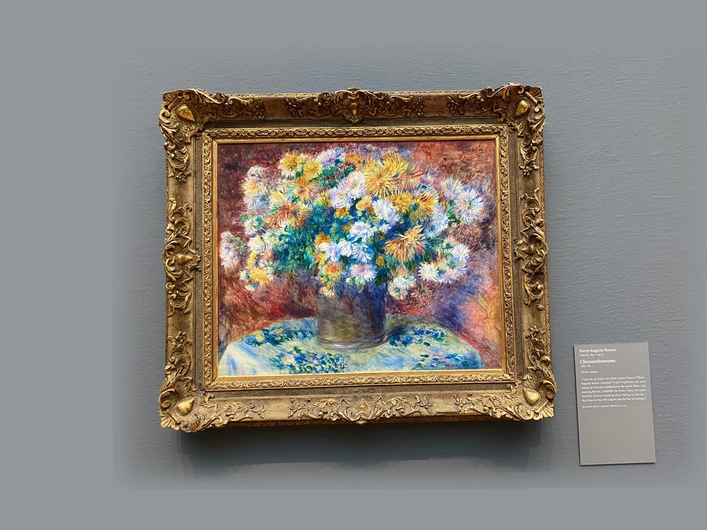
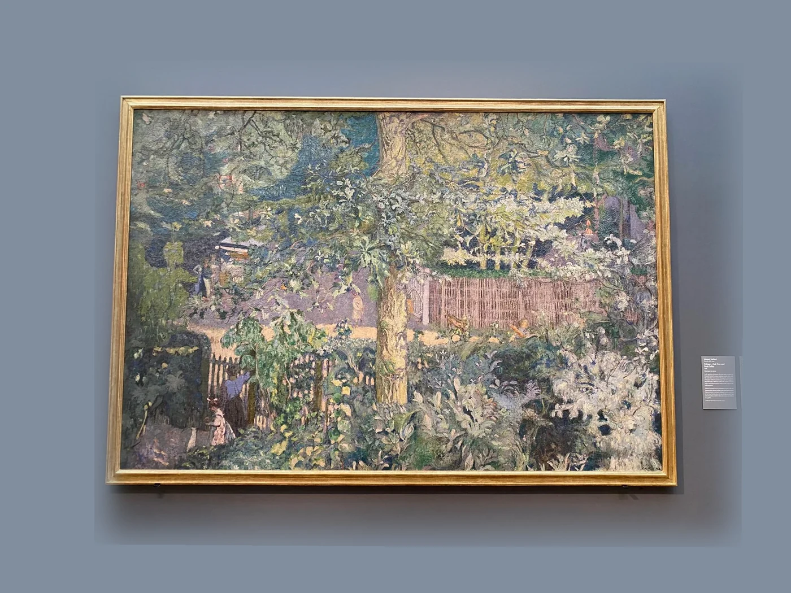
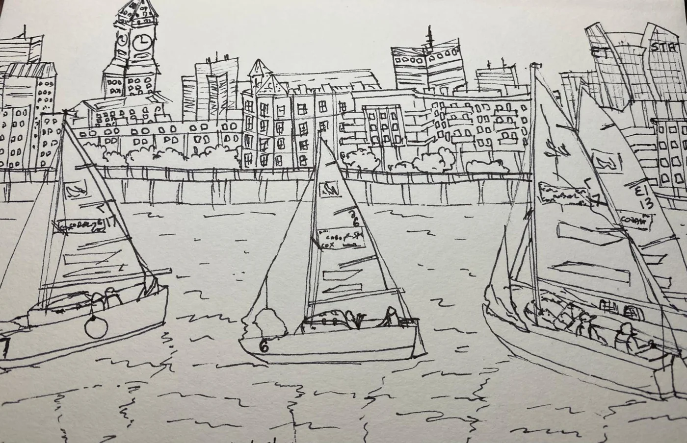
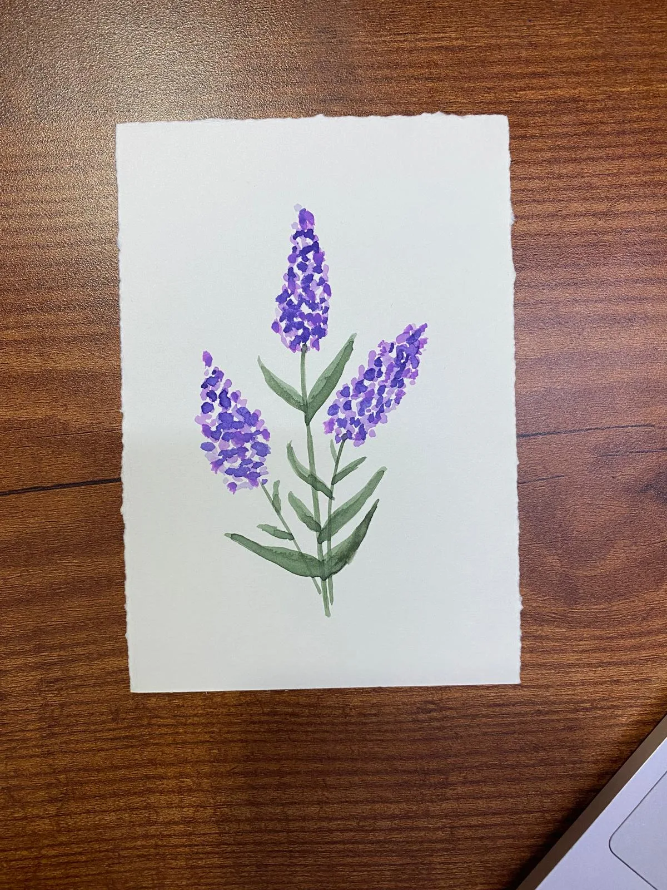
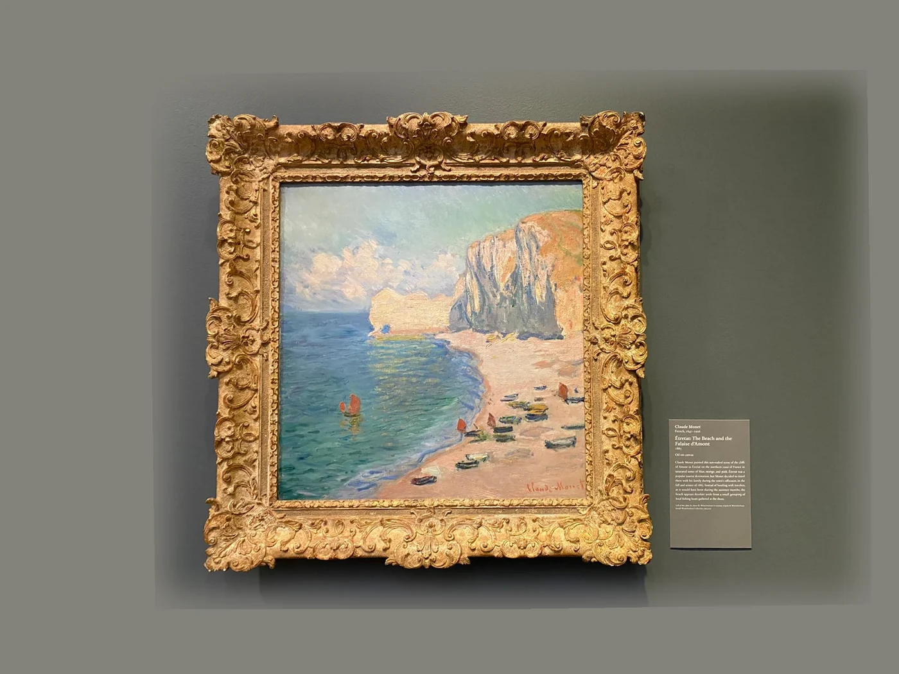
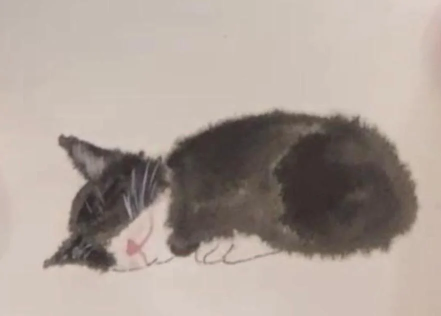
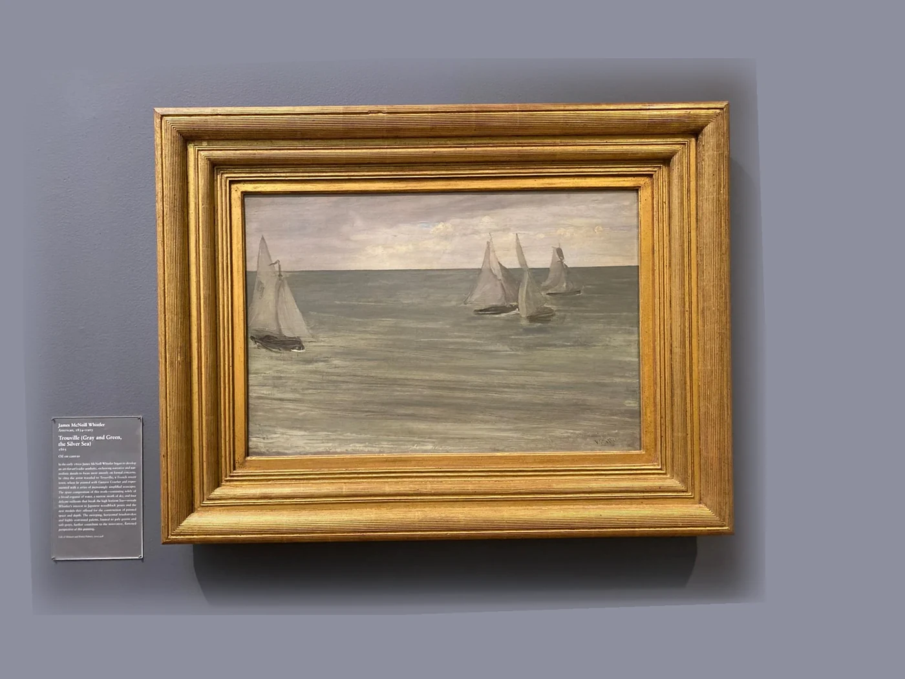
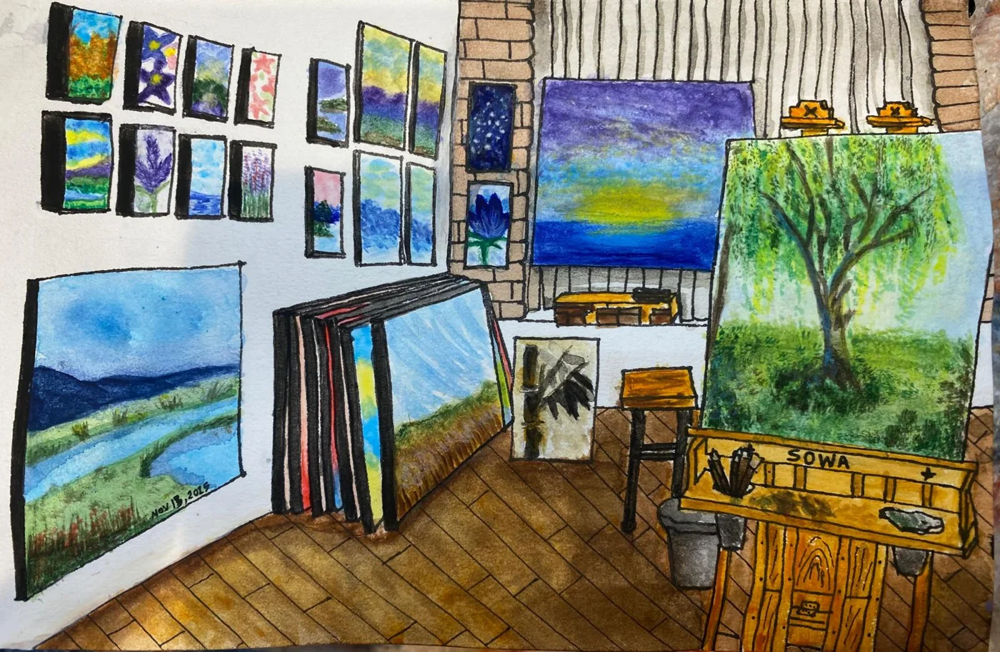
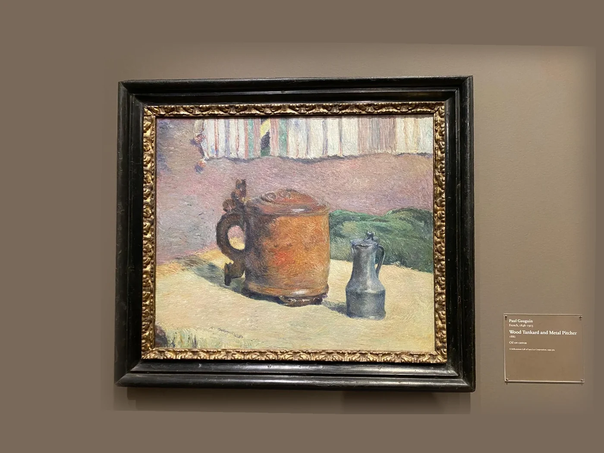
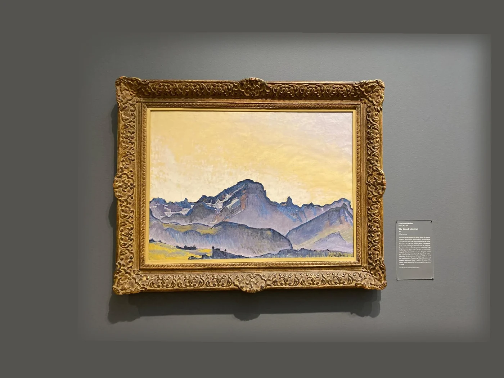